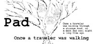
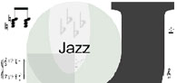

Screen real estate is limited. Collections grow large. Focus+context is a technique for varying the size and amount of detail in the interactive representation of a collection of surrogates. You see more of the focus element, in the context of the others.
reading: generalized
fisheye views
[George Furnas]
Proceedings of the SIGCHI conference on Human factors in computing systems
In many contexts, humans often represent their own
"neighborhood" in great detail, yet only major
landmarks further away. This suggests that such
views ("fisheye views") might be useful for the
computer display of large information structures like
programs, data bases, online text, etc. This paper
explores fisheye views presenting, in turn, naturalistic
studies, a general formalism, a specific instantiation, a
resulting computer program, example displays and an
evaluation.
reading: laying out and visualizing large trees using a hyperbolic space
[John Lamping and Ramana Rao]
Proceedings of the 7th annual ACM symposium on User interface software and technology
We present a new focus+context (fisheye) scheme for visualizing and manipulating large hierarchies. The essence of
our approach is to lay out the hierarchy uniformly on the hyperbolic plane and map this plane onto a circular display
region. The projection onto the disk provides a natural mechanism for assigning more space to a portion of the
hierarchy while still embedding it in a much larger context. Change of focus is accomplished by translating the
structure on the hyperbolic plane, which allows a smooth transition without compromising the presentation of the
context.

reading: Pad - an alternative approach to the computer interface
[Ken Perlin and David Fox]
Proceedings of the 20th annual conference on Computer Graphics and interactive techniques
We believe that navigation in information spaces is best supported
by tapping into our natural spatial and geographic ways of thinking.
To this end, we are developing a new computer interface model
called Pad.
reading: Pad++ - a zooming graphical interface for exploring alternate interface physics [Benjamin Bederson and James Hollan]
Proceedings of the 7th annual ACM symposium on User interface software and technology
We describe the current status of Pad++, a zooming graphical
interface that we are exploring as an alternative to tradhional
window and icon-based approaches to interface design. We
discuss the motivation for Pad++, describe the implementation,
and present prototype applications. In addition, we introduce
an informational physics strategy for interface design
and briefly compare it with metaphor-based design strategies.

reading: Jazz - an extensible zoomable interface toolkit in Java
[Bederson, Meyer and Good]
Proceedings of the 7th annual ACM symposium on User interface software and technology
In this paper we investigate the use of scene graphs as a
general approach for implementing two-dimensional (2D)
graphical applications, and in particular Zoomable User
Interfaces (ZUIs). Scene graphs are typically found in
three-dimensional (3D) graphics packages such as Sun’s
Java3D and SGI’s OpenInventor. They have not been
widely adopted by 2D graphical user interface toolkits.